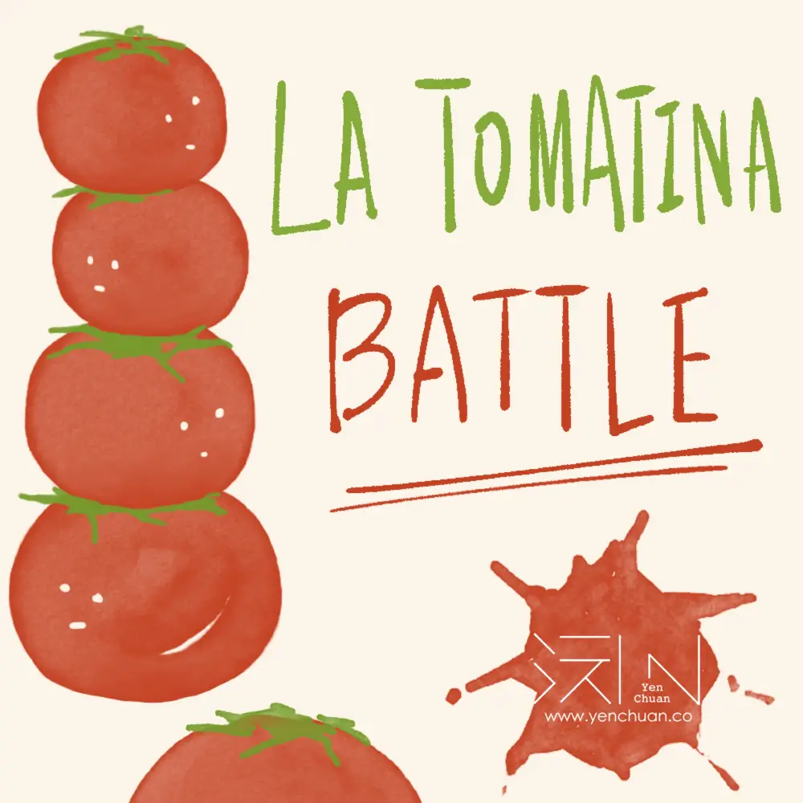
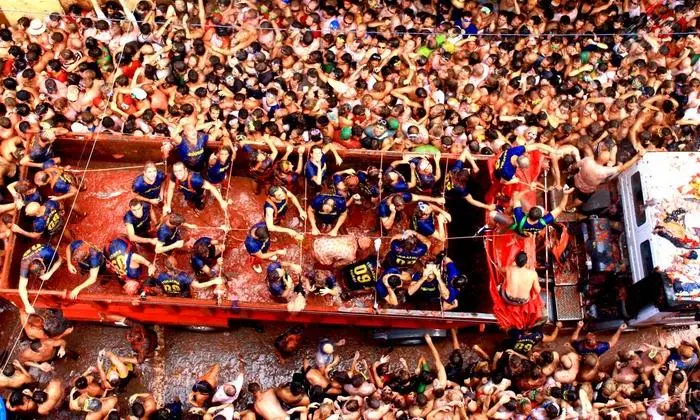

Articles / Tips & trends
Duke it out in La Tomatina!
2022-08-31 · News, Tips and Trivia

Have you heard about La Tomatina? La Tomatina is one of the craziest festivals and the biggest food fights in the world. Held in the Valencian town of Buñol, participants in the festival throw tomatoes and take part in a tomato fight for fun!
Traditionally it has been held on the last Wednesday of August, during a week of festivities in Buñol.
When did this all begin? What can you do in the festival? Read on and find out!

What is La Tomatina?
The La Tomatina Festival began in 1945, when some young boys joined in to mingle with the crowd in a parade during the town festivities.
In their excitement, the teens accidentally tripped one of the participants over. The participant got mad and started to hit everything in his way.
In the chaos, one nearby vegetable stall fell victim to the fury of the crowd as people started to pelt each other with tomatoes. The impromptu fruit battle only ended when the local forces stepped in.
And thus a new festival is born!
If you want to participate in La Tomatina, here are some tips to keep in mind:
Tomatina Dress code:
Wear clothes you don’t mind throwing away after the epic fight.
Some people wear white t-shirts, some others wear old clothes.
Wearing a swimsuit under your clothes is not a bad idea,
because you’re gonna end up soaked by tomato rain and water hoses.
Have a great, fun time!
What else you can do with tomatoes in a fun way? Check out our latest recipe👇